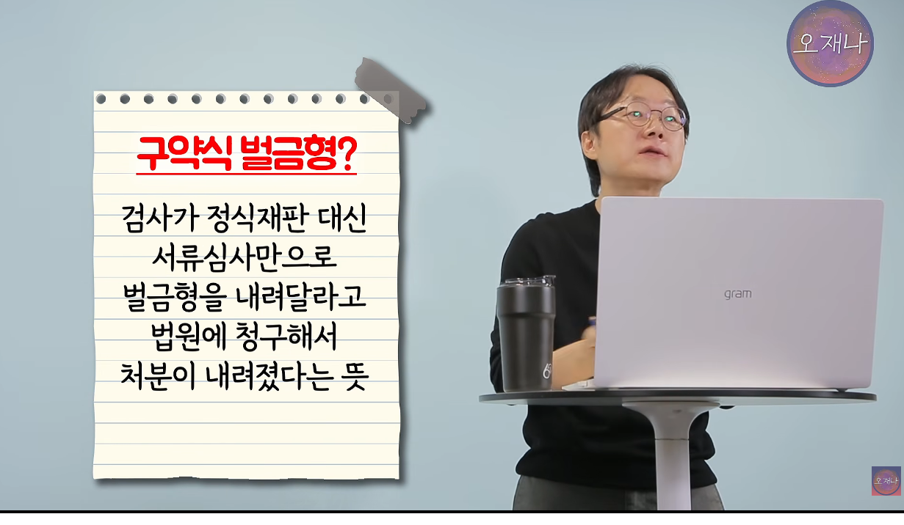

1. 돈많은 한 개인이 구단위 경찰서에 접수된 1년치 모욕죄 사건보다 더 많은 양의 고소를 난발함.
2. 백종원에게 고소당해 변호사를 선임하려하면, 벌금보다 변호사 선임비가 더비쌈.
3. 백종원은 고소당한 사람들이 법적대응을 하지 않는점을 노리는 건지
"구약식 벌금형 : 재판없이 벌금형으로 갈음" 선고로 진행함.

4. 백종원은 여기서 멈추지 않고 3천만 100원의 민사소송을 진행함.
복잡한 법률절차, 소송비용과 시간소모등을 피하기 위해 벌금내고 끝내려 했던 사람들은.........,
변호사를 사면, 벌금형이 아닐 수 도 있었던 사건 때문에 3천만 100원짜리 민사소송에 시달려야함.
뒤에 100원은 소액재판으로 소송절차가 간소화되는걸 막기위해 기준 금액보다 100원 더 붙인걸로 추측됨.
뒤에 붙은 100원으로 소송 당사자는 길고 지루한 정식재판절차를 밟아야함.
이정도면 소송오남용 방지법 하나 만들자고 국민청원이라도 들어가야 되는거 아닌가?
ㅈㄴ 악랄하다 진짜 ㅋㅋ